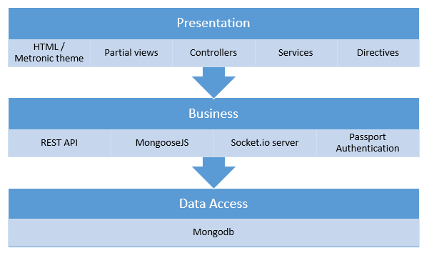
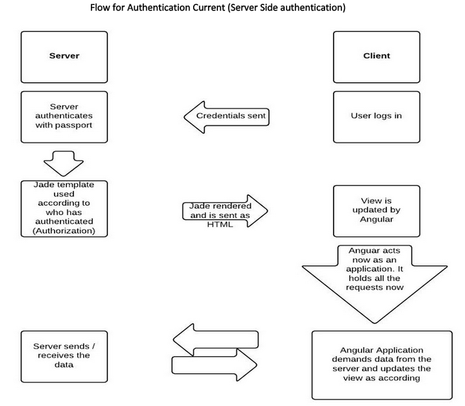

Cloudkibo uses nodejs on server side and angularjs on client side. Instead of html, Cloudkibo use jade templates which are then converted to html when served to client. Great care has been taken to separate the server side code from client side. To maintain great modularity, code has been separated into files according to role. Cloudkibo has configuration files on both server side and client side.Cloudkibo database, Mongodb, tables are defined in the code on server side with all the constraints defined with them.
On client side, Cloudkibo have modules to separate code. One of the core module, KiboRTC, is webrtc module. Currently conference services in this are not in use and have been replaced by new logic. However, new conference logic has been placed in conference folder. Othere such modules are: socket.io module, authentication module, rest api and sound module
Cloudkibo application uses purchased droplet from digitalocean (https://www.digitalocean.com/) for deployment. Our mongodb database is running in same droplet as of our application. For sending emails, we have integrated our application with sendgrid service. Turn server is running on IP address 45.55.232.65 and this droplet is named as “kibosupporttest”. Application’s basic architecture was generated using Angular-FullStack generator. On every commit, our repository tested and built on shippable. Next, we would integrate our application with docker also for auto-deployment.
Currently, our deployments are manual. We push the code to github and then access our droplet by ssh and pull the latest code there. With docker, we would just make a code push and docker will make build image for us.
Cloudkibo uses Passport as authentication middleware for it's Node server. As passport support authentication using a username and password, Facebook, Google and Microsoft. Passport recognizes that each application has unique authentication requirements. The verify callback for local authentication accepts username and password arguments, which are submitted to the Cloudkibo application via login form. Cloudkibo login form allows the user to enter their credentials and log in.
The login form is submitted to the Cloudkibo server via the POST method. Using authenticate() with the local strategy which will handle the login request. It authenticates with passport and jade templete is updated for the user who has logged in. This view is updated by angular.js, it is now the application. Angularjs now handles all the requests i.e. requests data from server and sends data to server.
